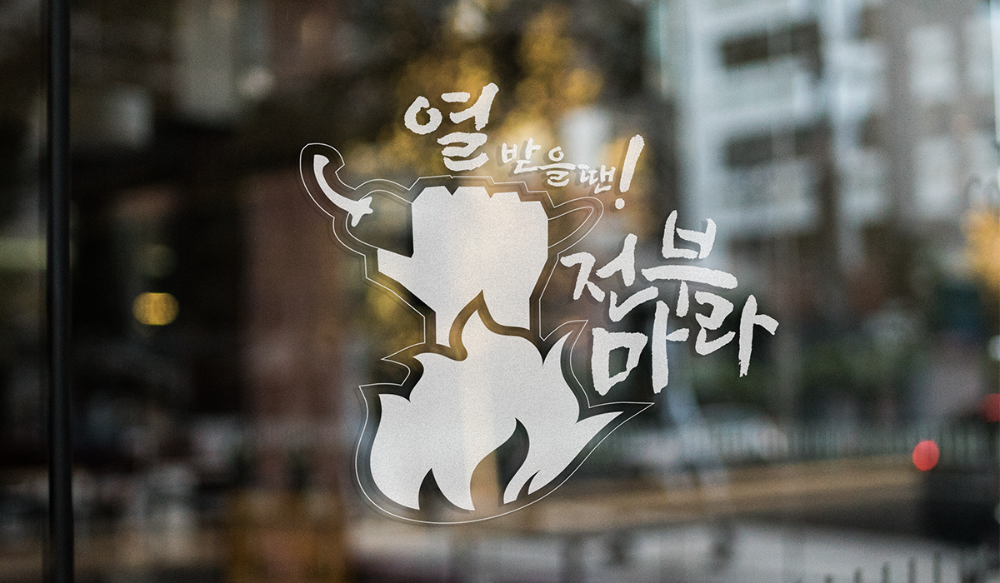
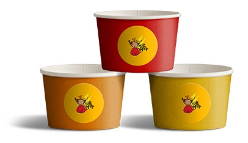
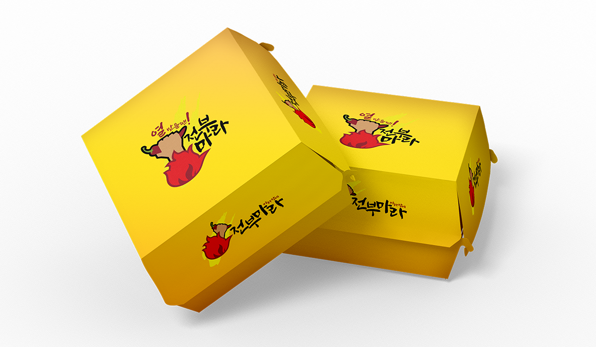
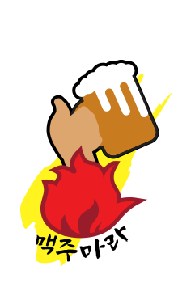
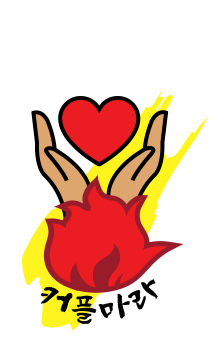
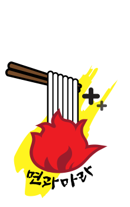
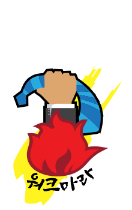
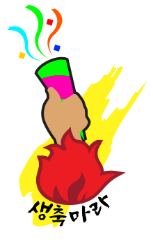
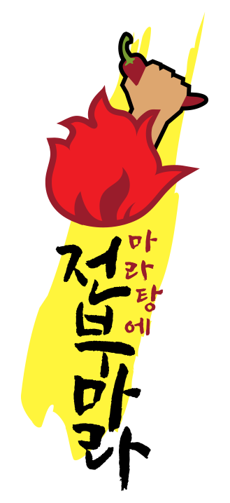
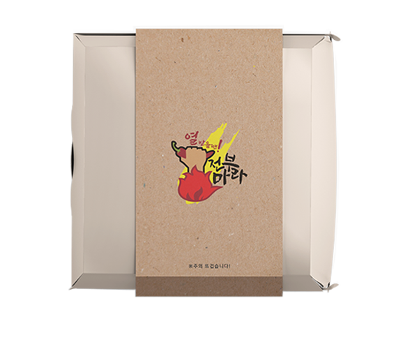

JEONBUMARA
기획의도
어떤 로고를 제작할까 고민하다 요즘 가장 유행인 것이 무엇일까
그리고 내가 지금 먹고싶은 것이 무엇일까 고민하였습니다.
자극적이고 얼큰한 한국인의 입맛을 저격한 '마라탕'
이 음식의 특징을 극대화시켜 만들었습니다.


JEONBUMARA
어떤 로고를 제작할까 고민하다 요즘 가장 유행인 것이 무엇일까
그리고 내가 지금 먹고싶은 것이 무엇일까 고민하였습니다.
자극적이고 얼큰한 한국인의 입맛을 저격한 '마라탕'
이 음식의 특징을 극대화시켜 만들었습니다.
'마라탕에 전부마라'는 마라의 언어유희를
이용한 로고입니다.
'전부 말아먹자'와 '힘들지마라'의 중의적표현을
이용한 것이 특징입니다.
'힘들지마라 슬프지마라'는 스트레스를 받는 사람들을
위한 의미로 사회의 힘듦을 겪고있는 직장인과
공부로 스트레스 받는 학생 등의 소비자를 노린 문구입니다.
화끈함과 스트레스를 융합시켜 제작하였습니다.


지치고 힘들어하지말고 마라탕에 재료 많이 말아먹고
기운내라는 의미로 만든 슬로건입니다.
오늘 상사가, 오늘 선배가, 오늘 애인이 지치게 한다면
지치고 외로울 때 울지 말고
간편하게, 또는 든든하게 드시기 바랍니다.

색은 보라색 계열의 그라디언트와 그 외의 색은
어두운 계열을 사용하여 보라색보다 눈에 띄지 않게
표현하였습니다.

맥주와 마라탕을 함께 먹어
맥주잔을 든 로고를 표현했습니다.

맥주와 마라탕을 함께 먹어
맥주잔을 든 로고를 표현했습니다.

맥주와 마라탕을 함께 먹어
맥주잔을 든 로고를 표현했습니다.

고된 직장인들의 스트레스를
마라탕으로 푸는 것을 표현하였고,
넥타이를 풀어 자유로운
느낌을 주었습니다.

생일을 맞은 마라인의
생일을 축하하는 마음으로
20% 할인 행사 이벤트

전부 말아 서로 어우러지라는 의미로 글씨들을
서로 둥글고 가깝게 표현하였습니다.

전부마라 포장지는 종이로 된 포장지로
살짝 흐린듯한 로고와 종이질감이 특징입니다.
마라탕은 국물이라 담을 수 없기 때문에
마라상궈를 담기 위한 용기로 제작하였습니다.